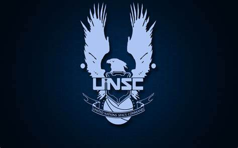
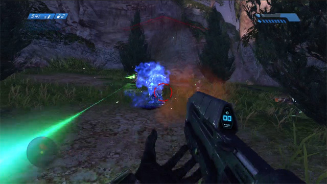
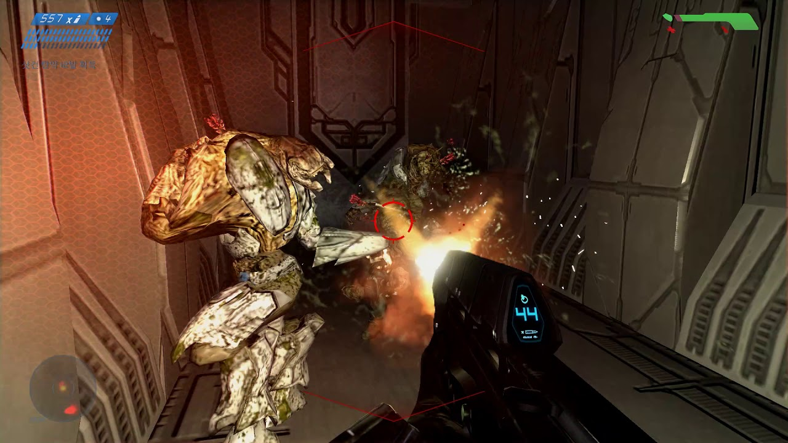
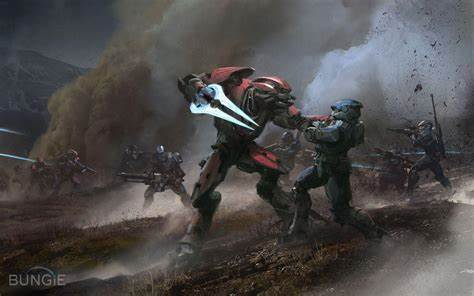

"Halo: Combat Evolved" es un videojuego de disparos en primera persona desarrollado por Bungie y lanzado en noviembre de 2001 para la consola Xbox. Es el primer juego de la serie Halo y ha sido aclamado por su innovador diseño de niveles, jugabilidad y narrativa. Los jugadores asumen el papel del Jefe Maestro, un super soldado conocido como Spartan, que lucha contra una alianza alienígena conocida como el Covenant y una amenaza biológica llamada los Flood.
 Los Floods son una especie parasitaria que se presenta como una de las principales amenazas en la serie Halo. Su objetivo es infectar a otros seres vivos y convertirlos en nuevas formas Flood. Se caracterizan por su capacidad de adaptarse y evolucionar rápidamente. Existen varias formas de Flood, incluidas las Spore (esporas), los Infection Forms (formas de infección) y los Gravemind (una forma inteligente que controla a los Flood). Son conocidos por su naturaleza voraz y su capacidad para desestabilizar ecosistemas enteros.
El Covenant es una alianza de razas alienígenas que busca la "Gran Journey", creyendo que la activación de los anillos Halo les brindará la salvación. Está compuesto por varias especies, incluyendo:
A lo largo del juego, el Covenant se convierte en un adversario formidable para el Jefe Maestro, mientras luchan por controlar los secretos de los anillos Halo.
